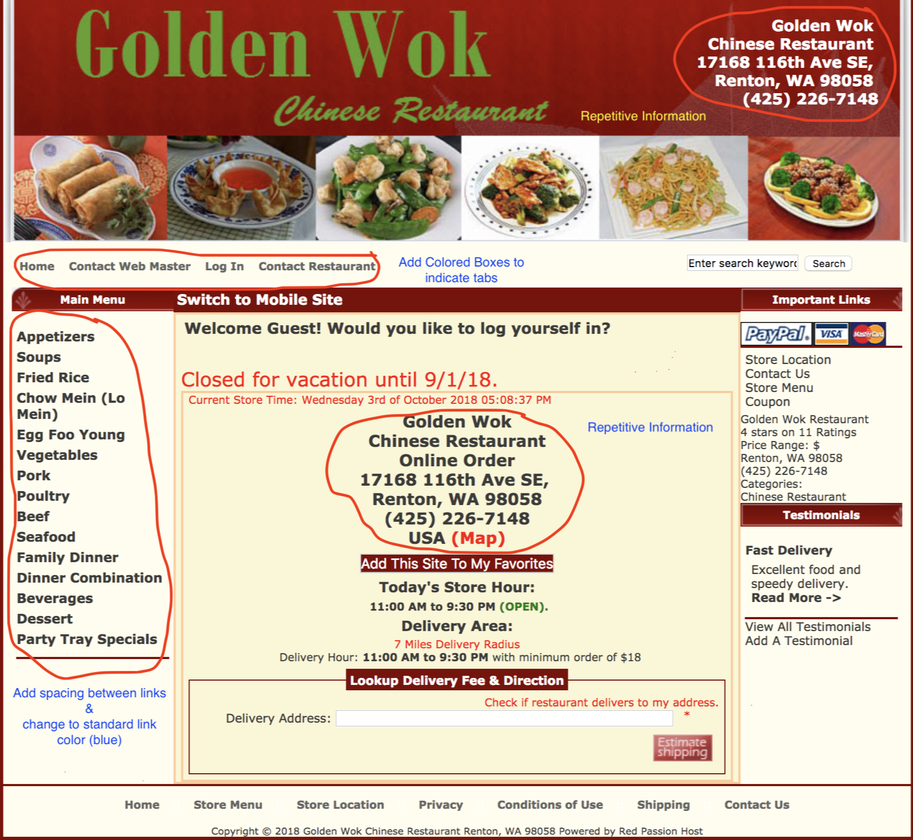
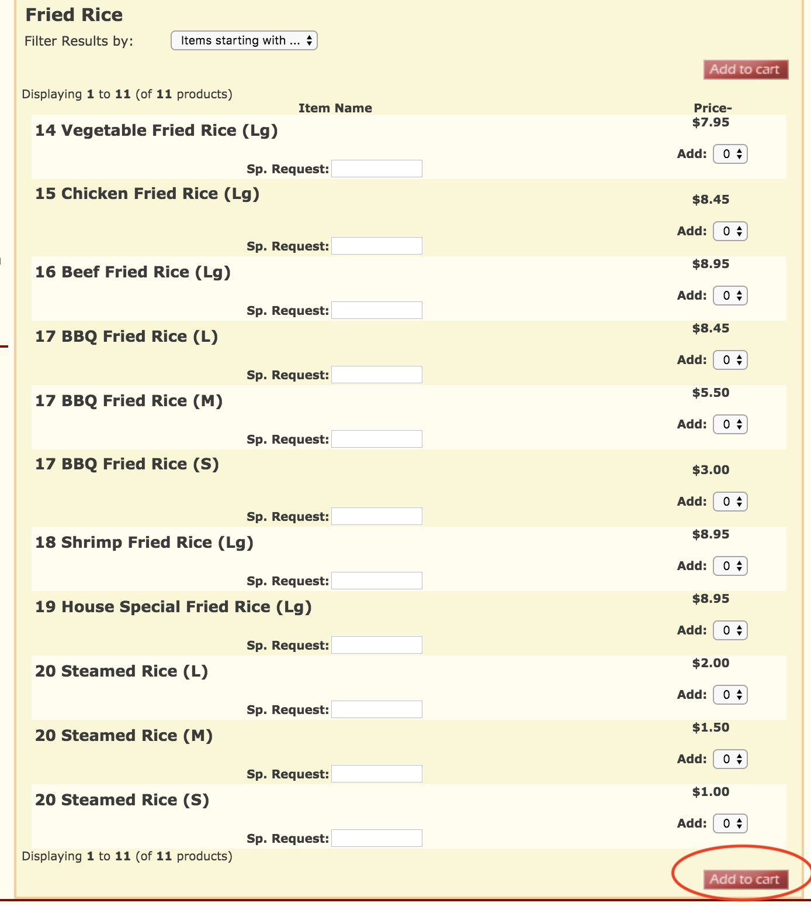
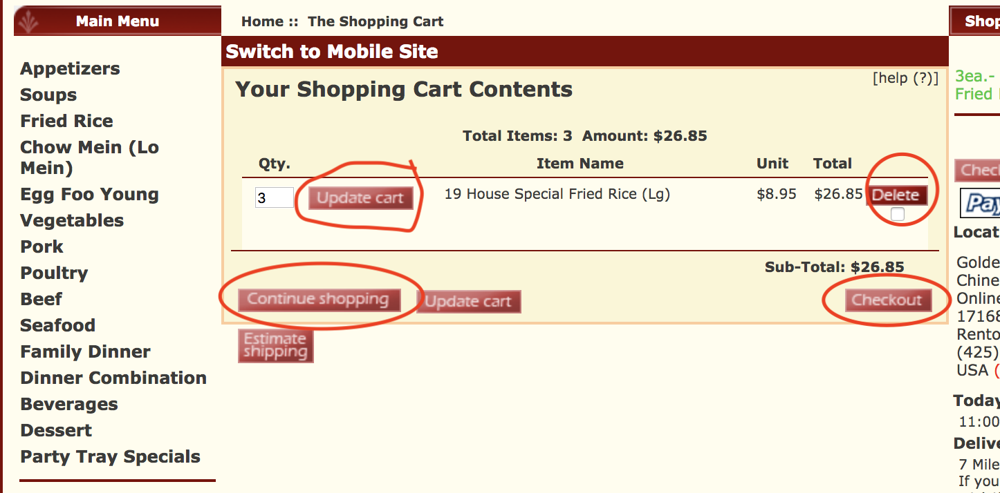

I decided to use the domain for the Chinese restaurant that is a couple miles down the road from where I live. The site is used to attract customers in the local area to order food from the restaurant for lunch or dinner either for carryout or delivery.
The criterion that I chose were:
- Does a viewer have to think?
- Is the webpage scannable? Are there key words an ordinary person would be able to find?
- Can a visitor be able to easily figure out how to use the website? Place an order, find an address or look over menu to decide before calling?
- Are there common conventions on the webpage such as design of the domain?
My analysis
I was instantly confused about where a clickable link was versus generic information for the restaurant when I first visited the site. My initial impression was the web developer was primarily concerned with functionality in terms of providing information to any viewer.
My suggestions for improvement would be to add spacing between the clickable links in the side menu that lists all the food options as well as picking a standard color (ex. Blue) so people will know that it’s clickable to find more information on options for Fried Rice or Chow Mein.
The webpage is scannable because I assume most users would click the food menu options on the left side of the webpage and be navigated to the restaurant menu, however the webpage is outdated and there are several possible areas for improvement.
Recommendations to improve Usability
First any links can be identified as clickable by adding a color (blue as default) to tell visitors this is a clickable link.
The visitor can easily figure out how to place an order online by using the dropdown menu options to add a desired number of items to their cart. The shopping cart is easy to understand with the options of updating cart, delete item, checkout, or continue shopping. The restaurant address and phone number are easy to spot on the homepage if the user doesn’t decide to eat elsewhere judging the food quality based on the domain.
The website doesn’t use common conventions in terms of how things look. Many of the elements are cluttered together that gives it the impression it’s “clutter” at the viewer. The website doesn’t use effective visual hierarchies on the side navigation menu that is basically the food menu. It would probably be a better idea to have the top hierarchy navigate to the entire menu (possible in a PDF) and then have each food “section” be a sub-tier hierarchy. This can be done easily since it’s already “nested” indicating they are part of something. This can further be done by indicating that each lower hierarchy is clickable as I’ve mentioned already. White space can be used to effectively aid viewers in scanning the page since over 80% of content is in the middle and both left/right middle sections of the page.